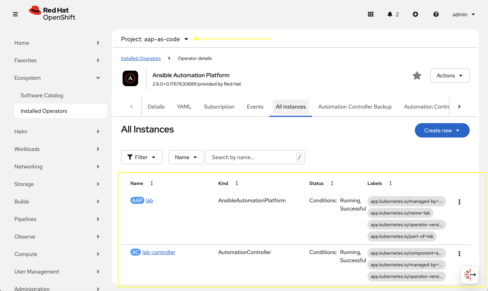

Install AAP on OpenShift via Infrastructure as Code
3.1: Run Installation Playbook
Now that the required environment is setup and Execution Environment created, we can test it locally:
ansible-navigator run \
--execution-environment-image aap-aap.{openshift_cluster_ingress_domain}/config_as_code_ee:1.0 \
--mode stdout \
install_aap.yml \
--extra-vars @/projects/env/secrets.yml \
--execution-environment-volume-mounts /projects/env:/projects/env:Z| The installation process can take 10-15 minutes as OpenShift all the resources, depending on which components are enabled in the playbook. |
[WARNING]: No inventory was parsed, only implicit localhost is available
[WARNING]: provided hosts list is empty, only localhost is available. Note that
the implicit localhost does not match 'all'
PLAY [Install AAP on OCP] ******************************************************
TASK [Include AAP OCP Install role] ********************************************
TASK [infra.aap_utilities.aap_ocp_install : Include pre-validation tasks] ******
included: /usr/share/ansible/collections/ansible_collections/infra/aap_utilities/roles/aap_ocp_install/tasks/pre-validate.yml for localhost
TASK [infra.aap_utilities.aap_ocp_install : Ensure OpenShift host variable is set] ***
ok: [localhost]
...
TASK [infra.aap_utilities.aap_ocp_install : Include Ansible Automation Platform EDA install tasks] ***
skipping: [localhost]
TASK [infra.aap_utilities.aap_ocp_install : Include OpenShift finalization tasks] ***
included: /usr/share/ansible/collections/ansible_collections/infra/aap_utilities/roles/aap_ocp_install/tasks/finalization.yml for localhost
TASK [infra.aap_utilities.aap_ocp_install : If login succeeded revoke OpenShift API token] ***
ok: [localhost]
PLAY RECAP *********************************************************************
localhost : ok=34 changed=0 unreachable=0 failed=0 skipped=28 rescued=0 ignored=03.2: Verify the Deployment
Once the playbook completes, verify that the AAP components are running in OpenShift.
-
Launch the OpenShift Web Console
-
Navigate to Ecosystem on the left hand navigation → Installed Operators.
-
Next to the
Project:dropdown in the top left, ensureaap-as-codeis the project shown. -
Click on the
Ansible Automation Platformoperator. -
In the toolbar, click on
All instances. -
Verify installation was completed.

-
Navigate to Networking → Routes
-
Open the URL under Location for the lab instance in a new window which should be link:https://lab-aap-as-code.{openshift_cluster_ingress_domain}/
-
Still within OpenShift, navigate to Workloads → Secrets
-
In the search box type
admin -
Click on lab-admin-password
-
Scroll to the bottom and copy the password
-
Use
adminas the username and the secret copied to login and verify -
Feel free as a bonus to modify your playbook and deploy additional items